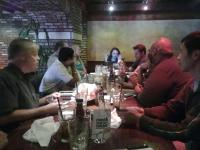

Post-SCALE Meeting

The SCALE Chairs met Sunday, March 13th to assess the recent SCALE 9x event. There were 13 Chairs and principle volunteers present. Some highlights from the meeting:
Attendance was up about 20% year over year. (S9X was cash positive and can proceed with planning 10X)
Reactions to the show were mostly positive, with some notable exceptions around the venue.
We went around the table and the various chairs discussed successes in their particular areas of Expo responsibility, and areas that need improvement for the next Expo. Some of those are:
Most presentations were well-received. (If you haven't filled out your speaker survey, please do so!)
Parking at the Hilton was an issue, as was food; both issues will be addressed with the hotel before next year.
The Game night was well received. We'll fine-tune it for next year.
We'll try to do a better job of estimating the number of shirts, cups, programs etc. It's always a crapshoot, but we can do better. We may investigate several other kinds of SCALE 'swag' also. (Note: some SCALE products will be available for ordering online at CafePress or similar site soon - stay tuned for details).
Wireless worked reasonably well. We had good coverage on 2.4 GHz; 5 GHz could have used better coverage.
We were able to take advantage of the hotel's DS3 link for SCALE. Our WAN bandwidth bumped against our self-set 42 Mbit/second ceiling frequently. We averaged 10-15 Megabits/second inbound.
Have a separate room as NOC worked well, but other SCALE functions that were lumped into it need to be separated out.
Registration for companion events to SCALE was problematic; needs to be improved.
Cellphone coverage is an issue at the Hilton (reportedly the hotel is working with Hilton Corporate to find a resolution. If they don't find one before next year, SCALE itself will look for some sort of interim solution).
With last-minute changes to presentation schedules, it's impossible to publish a 100% accurate schedule in the program. Much discussion about how to remediate this.
The digital signage was a welcome addition but it needs tweaking for next year.
Some discussion about revising pricing for various parts of the Expo; no decisions made.
A/V had some problems related to planning and volunteer resources; those are being addressed.
The SCALE team will be migrating their communications to Sogo (http://www.sogo.nu/english.html) groupware in the next few months.
Managing the BOFs was a hassle - needs more attention in the future (volunteers, anyone)?
SCALE needs some marketing assistance. We'll be looking for one or more volunteers in this area.
We're also looking for some more assistance with sponsorship. This would be an ongoing (i.e., year-round activity.)
SCALE is struggling with what to do with the Saturday night reception. It's a major hassle to manage and results in overcrowding and unhappy guests. We'll try some scheduling changes next year, or perhaps a modified reception.
Next year will be SCALE's 10th anniversary. A theme was proposed: "Linux and Open Source - Past and Future".
A true "newbie" track will be added next year, possibly with dedicated training classes and dedicated computer training room (over and above the Try-It Lab).